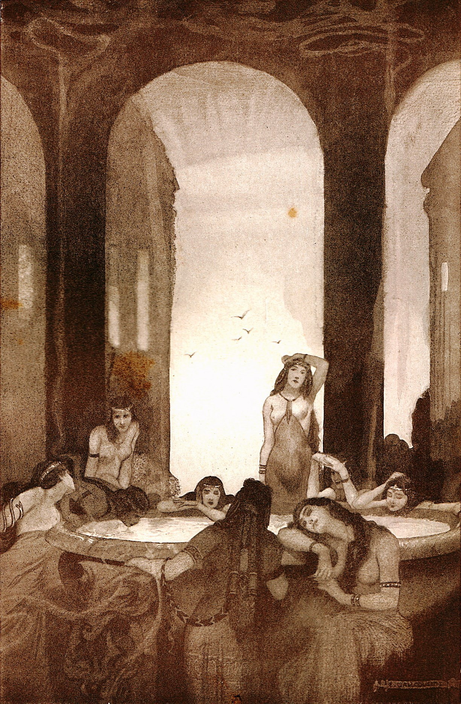
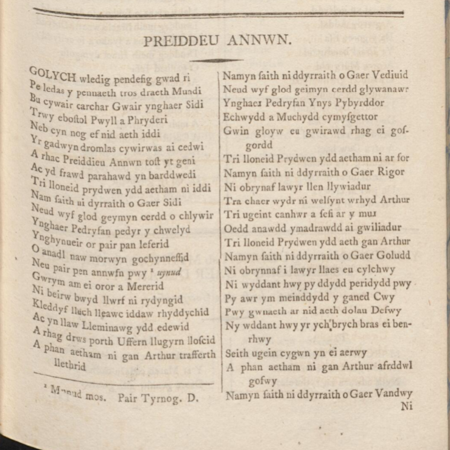
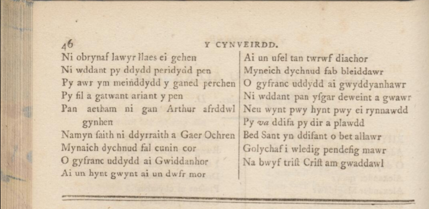

Preideu Annwfyn - Preizhoù an Anaon
Les Dépouilles de l'Abîme - The Spoils of the Otherworld
|
Si
Arthur
a fait une belle carrière littéraire en Bretagne, il occupe une place de choix dans l'imaginaire collectif du
Pays de Galles
. C'est ainsi qu'un poème gallois du 9/12ème siècle tiré du manuscrit « Llyfr Taliesin », datant du 13ème siècle voit en lui un ami et protecteur de la poésie. Il sacrifie son bateau "Prydwen" et deux autres vaisseaux tout semblables pour permettre à une foule de néophytes d'accéder aux arcanes de l'inspiration poétique. Mais l'art est difficile et seuls sept élus reviendront de ce périlleux voyage, ayant pu contempler le chaudron de l'inspiration sur lequel veillent les neuf muses celtiques et les autres dépouilles de l'Autre-monde, de l'Annwfyn. Un auteur anglais (Squire) écrit:
« La Forteresse de Verre aux portes d'airain et aux quatre tours, veillée par des sentinelles muettes et fantomatiques, tournant dans une révolution incessante, pour qu'on ne pût en trouver l'entrée, était plongée dans une nuit noire à peine entamée par la lueur crépusculaire de la lampe suspendue à sa porte. Elle protégeait les festins et les réjouissances, que l'on célébrait en son centre. La plus précieuse des nombreuses richesses qu'elle recelait était le Chaudron de la poésie et de l'inspiration dont le rebord s'ornait de perles. Son bouillonnement incessant était entretenu par le souffle de neuf pythonisses brittoniques, pour qu'il ne cesse de proférer ses oracles." Outre la traduction anglaise du professeur de l'université de Rochester, Sarah Highley que l'on lira ci-après, j'ai trouvé d'autres versions anglaises et françaises de ce poème, toutes différentes les unes des autres, tant le texte original semble corrompu. Pour me guider dans ma propre traduction, j'ai essayé de transcrire ce dernier en breton, pour tirer parti des similitudes entre ces deux langues. Les authentiques bretonnants frémiront sans doute d'horreur. Je les remercie d'avance de m'indiquer les fautes les plus grossières. |
If
Arthur
had a fine literary career in Brittany, he occupies a very special place in the collective imagination of
Wales
. Thus a 9 / 12th century Welsh poem from the 13th century manuscript “Llyfr Taliesin” sees him as a friend and protector of poetry. He sacrifices his boat "Prydwen" and two other similar vessels to allow a large crowd of neophytes to access the mysteries of poetic inspiration. But art is difficult and only seven chosen ones are to return from this perilous voyage, and were able to contemplate the Cauldron of inspiration looked after by the nine Celtic muses and other Spoils of Annwfyn, the Otherworld . An English author (Squire) writes:
"The strong-doored, foursquare fortress of glass, manned by its dumb, ghostly sentinels, spun round in never-ceasing revolution, so that few could find its entrance; it was pitch-dark save for the twilight made by the lamp burning before its circling gate; feasting went on there, and revelry, and in its centre, choicest of its many riches, was the pearl-rimmed cauldron of poetry and inspiration, kept bubbling by the breaths of nine British pythonesses, so that it might give forth its oracles." In addition to the English translation by Rochester University's Prof Sarah Highley which will be read below, I found other English and French versions of this poem, all different from each other, as the original text seems corrupted. To guide me in my own translation, I tried to transcribe the Welsh text in Breton, to take advantage of the similarities between both languages. Genuine Breton speakers will no doubt shudder with horror. I thank them in advance for pointing out the grossest faults. |
| Cymraeg | Brezhoneg | Français | English |
|---|---|---|---|
|
Preideu Annwfyn
1. Golychaf wledic pendeuic gwlat ri. 2. [R]yledas y pennaeth dros traeth mundi. 3. Bu kyweir karchar Gweir [1] yg Kaer Sidi [2] 4. Trwy ebostol Pwyll a Phryderi. [3] 5. Neb kyn noc ef nyt aeth idi. 6. Yr gadwyn trom las kywir was ae ketwi. 7. A rac Preideu Annwfyn [4] tost yt geni. 8. Ac yt urawt parahawt yn bard wedi. [5] 9. Tri lloneit Prydwen [6] yd aetham ni idi. 10. Nam seith ny dyrreith o Gaer Sidi. 11. Neut wyf glot geinmyn cerd ochlywir. 12. Yg Kaer Pedryuan pedyr y chwelyt. 13. Yg kenneir or peir [7] pan leferit. 14. O anadyl naw morwyn gochyneuit. 15. Neu peir pen Annwfyn pwy y vynut. 16. Gwrym am yoror a mererit. 17. Ny beirw bwyt llwfyr ny rytyghit. 18. Cledyf lluch Lleawc [8] idaw rydyrchit. 19. Ac yn llaw Lleminawc yd edewit. 20. Arac drws porth Uffern llugyrn lloscit. 21. A phan aetham ni gan Arthur tra fferth lechrit 22. Namyn seith ny dyrreith o Gaer Vedwit. 23.Neut wyf glot geinmyn kerd glywanawr. 24 Yg Caer Pedryfan ynys pybyrdor 25. Echwyd a muchyd kymyscetor [9] 26. Gwin gloyw eu gwirawt rac eu gorgord. 27. Tri lloneit Prydwen yd aetham ni ar vor. 28. Namyn seith ny dyrreith o Gaer Rigor. [10] 29. Ny obrynafi lawyr [11] llen llywyadur. [12] 30. Tra Chaer Wydyr [13] ny welsynt wrhyt Arthur. 31. Tri vgeint canhwr aseui ar y mur. 32. Oed anhawd ymadrawd aegwylyadur 33. Tri lloneit Prydwen yd aeth gan Arthur. 34. Namyn seith ny dyrreith o Gaer Golud. 35. Ny obrynaf y lawyr llaes eu kylchwy 36. Ny wdant wy pydyd peridyd pwy. 37. Py awr ymeindyd y ganet cwy. [14] 38. Pwy gwnaeth arnyt aeth doleu Defwy. 39. Ny wdant wy yrych brych [15] bras y penrwy. 40. Seith vgein kygwng yny aerwy. 41. Aphan aetham ni gan Arthur auyrdwl gofwy. 42. Namyn seith ny dyrreith o gaer vandwy. 43. Ny obrynafy lawyr llaes eu gohen. 44. Ny wdant pydyd peridyd Pen. 45. Py awr ymeindyd y ganet Perchen. 46.Py vil agatwant aryant y pen. [16] 47. Pan aetham ni gan Arthur afyrdwl gynhen. 48. Namyn seith ny dyrreith o Gaer Ochren. 49. Myneich dychnut val cunin cor. 50. O gyfranc udyd ae gwidanhor. 51. Ae vn hynt gwynt ae vn dwfyr mor. 52. Ae vn vfel tan twrwf diachor. 53. Myneych dychnut val bleidawr. 54.O gyfranc udyd ae gwidyanhawr. 55. Ny wdant pan yscar deweint agwawr. 56. Neu wynt pwy hynt pwy yrynnawd. 57. Py va diua py tir aplawd. 58. Bet sant yn diuant abet allawr. 59.Golychaf y Wledic Pendefic mawr. 60. Na bwyf trist Crist am gwadawr. |
Preizhoù an Anaon
1. Gloar d'an Aotroù Mestr ar vro ha Roue 2. A astennas E bennadur a-dreuz traezh mundi (ar bed). 3. Bez a oa kempennet da Weir e garc'har e Kaer Sidi, 4. Hervez danevell Pwyll ha Pryderi. 5. Den ebet, kent ma reas, na eas di. 6. Ur chadenn kreñv ha glas a zalc'he ar waz leal. 7. E-tal preizhoù an Anaon trist e kane hemañ. 8. Ha betek ar Varn e pado hor barzhoniez. 9. Tri leunad Prydwen, ez aemp-ni di. 10. Nemet seizh na zistroas den eus Kaer Sidi. 11. Hogen pegen splann va c'hlod Va c'han pa vo klevet! 12. Gant Kaer Beurvat peder wech o vont endro. 13. Va barzhoniezh eus ar gaoter pa oa lavaret, 14. Eus anal nav plac'h e oa enaouet. 15. Kaoter Penn Anaon e pe giz eo graet? 16. Tro-war-dro d'ar vardell perlez warni. 17. Ne verv ket boued d'ur c'habon n'eo ket he labour. 18. Kaletvoulc'h lazh a oa savet outi . 19. Hag e dorn Lleminawc aet eo. 20. War treuzoù porzh an Ifern ul letern zo war enaou. 21. Ha pa'z edomp-ni gant Arzhur - Un dra verzh ha diverzh! - 22. Nemet seizh na zistroas den eus Kaer Vezvadenn. 23.Na pegen splann va c'hlod! Va c'han a vez klevet 24 E Kaer Pedervann, enez lugernus he dor 25. Ac'hoez ha jed O kemmeskañ 26. Gwin gloev ha mezvuz Araok an eskort... 27. Tri leunad Prydwen ez aemp-ni war vor. 28. Nemet seizh, na zistroas den eus Kaer Rigor. 29. Ne goprañ tud-a-lezenn leñ o lennegezh. 30. A-dreuz Kaer Wer na welent gourhed Arzhur. 31. Tri-ugent kant den war-zav war ar mur. 32. Diaes a oa parlañtiñ d'ar santinell 33. Tri leunad Prydwen oa aet gant Arzhur. 34. Nemet seizh na zistroas den Eus Kaer Zisluz. 35. Ne goprañ tud-a-lezenn laosk o c'helc'hioù, 36. N'ouzont ket pe deiz piv oa koñsevet. 37. Pet eur kreisteiz oa ganet, na pelec'h. 38. Piv oa kaoz ma n'eo ket aet da draon Defwy. 39. N'ouzont ket an ejenn brizh Bras e gernioù 40. Seizh ugent skod en e eread. 41. A pa'z aemp-ni gant Arzhur - bizit poanius meurbed! - 42. Nemet seizh na zistroas den eus Kaer Vann-Doue. 43. Ne goprañ tud-a-lezenn laosk o bolontez . 44. Na ouzont ket pe deiz oa krouet o Fenn. 45. Pet eur e kreisteiz oa ganet ar Perc'henn. 46.Pe vil a oa gante arc'hant e benn. 47. Pa'z aemp-ni gant Arzhur - glac'harus a emgann! - 48. Nemet seizh na zistroas den eus Kaer Oc'hren. 49. Menech a gevre vel chase chantele 50. E kejadenn tost gant dud a oar: 51. Hag ez eo un hent d'an avel hag unan d'an dour vor? 52. Eus ur fulenn nemeti Tan ar freuz diharz? 53. Menec'h a gevre vel bleizi en ur vandenn. 54. A-gevret ez eont gant gouiziegien. 55. N'ouzont ket peur eo war-ziskar Noz ha goulou-deiz. 56. N'ouzont ket pe seurt avel a wast pep tra war e hent. 57. Pe lec'h a zistruj Pe zouar a skourj. 58. Bez ar Sant zo o vont diwar wel: ha bez ha leur. 59. Glorifian an Aotroù Ar Mestr bras. 60. Ma na vefen trist Krist am argouraouas. |
Les Dépouilles de l'Abîme
1. Gloire à Notre Seigneur, le maître du Royaume 2. Dont l'empire aux grèves de ce monde s'étend. 3. La prison qui retint Gweir fut des plus solides: Kaer Sidh, le fort puissant. 4. Or, l'histoire de Pwyll et Pryderi l'assure, 5. Nul ne put avant lui parvenir à ces bords. 6. Une chaîne d'azur, entravait ce jeune homme! 7. Triste, il chantait devant les Dépouilles opimes... 8. Et jusqu'au Jugement, tous, bardes que nous sommes, nous chanterons ainsi. 9. Trois fois plein le navire Prydwen, nous partîmes... 10. Nous n'étions plus que sept au retour de Kaer Sidh. 11. Si l'on entend mon chant, il faudra qu''on m'encense... 12. A Kaër Pedryfan à l'enceinte quadruple, 13. Mon talent, le Chaudron lui seul, le dispensa. 14. Lui que le souffle de neuf Muses réchauffa. 15. Ce chaudron d'Annwfyn, quelle est son apparence?. 16. De perles sa bordure alentour est ornée. 17. Il n'a pas à bouillir de lâches la pitance. 18. D'Excalibur il a raffermi la substance, 19. Avant que Llyminawc en sa main l'eût serrée ... 20. Sur le seuil de l'Enfer une lanterne guète. 21. Nous suivîmes Arthur - O la splendide quête! - ... 22. Nous n'étions que sept au retour de Kaer Medwyd. 23. Si l'on entend mon chant, quelle gloire ineffable! 24 Au Fort aux Quatre Murs, (Pedryfan) , cette île inexpugnable, 25. On vit la méridienne au jais mêler les ors 26. De l'enivrant vin blond qui précèdait l'Escorte! 27. Trois fois la nef Prydwen: c'était notre cohorte ... 28. Nous n'étions plus que sept, rentrés de Kaer Rigor. 29. Je fais bien peu de cas des piètres gens de lettres: 30. Au Fort de Verre, Arthur, ta vertu l'ont-ils vue?. 31. Six mille hommes couvraient les murailles peut-être. 32. Eux, dont la sentinelle obstinément s'est tue! 33. Trois fois plein le vaisseau d'Arthur, nous embarquâmes ... 34. Nous n'étions que sept au retour de Kaer Golud. 35. A d'autres mes lauriers, cuistres aux targes traîtres! 36. Vous ne savez le jour où Kwy commença d'être. 37. Quelle heure de midi, ce Kwy, l'aura vu naître; 38. Et qui ne permit point qu'aux vallées de Defwy jamais il arrivât. 39. Et le bœuf tacheté et sa large encornure, 40. Aux cent quarante nœuds sur sa longe: ignoré! 41. Nous, c'est avec Arthur, un jour, que nous partîmes... 42. Nous n'étions plus que sept rentrés de Kaer Mandoué. 43. Je fais bien peu de cas des scribes aux vues grises. 44. Qui ne savent le jour où leur Chef a paru. 45. Quelle heure de midi vit naître son emprise. 46. Quel animal au front d'argent leur fut confié. 47. Nous suivîmes Arthur au milieu des tourmentes... 48. Mais nous n'étions que sept rentrés de Kaer Ochren. 49. Ainsi qu'un chœur de chiens, tant de moines en meute, 50. S'élancent au devant des quelques herméneutes 51. Qui savent que le vent, la mer, n'ont qu'un chemin, 52. Qu'une étincelle peut réduire tout à rien! 53. Ces moines tels des loups. 54. Courent à la rencontre de ceux qui savent. Eux 55. Ignorent quand la nuit accouche de l'aurore, 56. Quel est le cours du vent; sur quel roc il se rompt; 57. En quels lieux il fait rage et quel sol il harcèle. 58. Et la tombe du Saint s'évanouit: la stèle, le fonds et le tréfonds ... 59. Je rends grâce au Seigneur Christ, maître du Royaume : 60. Il console tout homme: Il m'a pourvu de dons. |
The Spoils of the Otherworld
1 I praise the Lord, Master of the realm, King 2 He extended his dominion over the shore mundi .(of the world) 3 Stout was the prison of Gweir in Caer Sidi, 4 According to the account of Pwyll and Pryderi: 5 No one before him went into it. 6 The heavy blue chain firmly held the youth, 7 And before the spoils of Annwfyn woefully he sang, 8 And till doom shall last our bardic invocation 9 Thrice enough to fill Prydwen we went into it; 10 Except seven, none returned from Caer Sidi 11 Fame is promised to me if my song is heard 12 In Caer Pedryvan the fourfold walled fort. 13 My poetry from the cauldron, it was uttered, 14 By the breath of nine maidens it was gently warmed. 15 The cauldron of the Chief of Annwfyn What is its fashion? 16 Round its edge e rim Of pearls 17 It will not cook the food of a coward That is not its destination 18 Lleawch's flashing sword was raised to it, 19 Then in the hand of Lleminawg. It was left 20 Before the door of Hell A lamp was burning. 21 When went with Arthur- - a splendid undertaking -- 22 Except seven, none returned from the Castle of Revelry. 23 Fame is promised to me if my song is heard 24 In Caer Pedryvan, the Isle of the Strong Door 25 Where flowing water and jet mingle together, 26 And bright wine was the drink before their retinue 27 Thrice enough to fill Prydwen we went on the sea . 28 Except seven, none returned from Caer Rigor 29 I will not praise the petty men-of-letters. 30 Beyond Glass Castle they saw not the prowess of Arthur; 31 Three-score hundreds stood on the walls; 32 It was hard to converse with their watchman. 33 Thrice enough to fill Prydwen we went with Arthur; 34 Except seven, none returned from Caer Golud 35 I will not praise the petty men whose shield straps are slack 36 They know not on what day who arose 37 Or what hour of the midday Cwy was born, 38 Or who caused that he should not go to the dales of Devwy. 39 They know not the brindled ox with the broad head-band, 40 Seven-score links on his collar 41 When we went with Arthur, a mournful voyage, 42 Except seven, none returned from Caer Vandwy 43 I will not praise the petty men of drooping will 44 They know not which day their chief arose, 45 Nor in what hour of midday their owner was born, 46 Nor what silver-headed beast they keep 47 When we left with Arthur, for a sorrowful strife, 48 Except seven, none returned from Caer Ochren 49. Monks pack together like a choir of dogs 50. From an encounter with lords who know: 51. Is there one course of wind? is there one course of water? 52 Is there one spark of fire of fierce tumult? 53. Monks pack together like young wolves. 54. From an encounter with lords who know. 55. They do not know when midnight and dawn divide. 56. Nor concerning the wind, what its course, what its onrush, 57. what place it ravages, what region it strikes. 58. The grave of the saint is vanishing, both grave and ground. 59. I praise the Lord, great prince, 60. That I be not sad, Christ endows me. |
|
[1] Gweir Map Geirioed
: est décrit dans une « Triade de l'Île de Bretagne », la Triade 52, comme l'un des trois prisonniers fameux de ladite île. Il subit sa punition dans une prison préparée pour lui dans la forteresse de l'Au-delà où il chante devant les « dépouilles d'Annwfyn ». Il est délivré par Arthur dans le conte des "Mabinogion", Culhwch et Olwen.
[2] Kaer Sidh : L'au-delà de la mythologie irlandaise ("sidh") est évoqué dans un autre poème du « Livre de Taliésin » de la même façon : « Ys kyweir vyg kadeir yg kaer sidi », "On m'a préparé mon siège à Kaer Sidi" = Ma réputation est immortelle. Un trône m'attend dans l'Au-delà. Dans ce poème, il est aussi question de forteresse marine, d'une fontaine d'abondance, d'un breuvage plus suave que le vin blanc. [3] Ebostol Pwyll a Phryderi : Pryderi est le fils de Pwyll dans le conte gallois des Mabinogion, « Pwyll, prince de Dyved ». En breton, "poell"= raison, bon sens, "prederi"= préoccupation, réflexion, "ebestel"= apôtres ou épître (ici 'conte'). C'est un autre personnage, Manawydan, fils du roi Llyr qui est associé à Pryderi dans la 3ème "branche" (conte) des Mabinogion. [4] A rac preideu Annwfyn . Rac= breton rak, "devant". Ces "dépouilles" (breton: preizh-où) sont sans doute le chaudron que convoitent les compagnons d'Arthur . Mais il peut s'agir en outre du vin enivrant (str. 25) et de l'animal fabuleux dont il est question, str. 39 et 46. [5] Yn bard-wedi. Gwedi= prière. Yn= breton, "hon", notre. Ce mot se rapporte-t-il à l'auteur+ Gweir ? Ce peut-être aussi un "nous" de majesté. Ou l'équivalent du breton "goude"= par la suite. [6] Prydwen (face blanche) est le nom du bateau d'Arthur dans la « Conquête d'Olwen » des Mabinogion. [7] Or peir (du chaudron) : Dans « Y Gododdin » d'Aneurin, on voit Taliesin subir une initiation poétique (« o feg gywrennin »= sa bouche exercée) décrite comme un emprisonnement sous terre. Dans le « Conte de Gwion Bach » et le « Conte de Taliesin » c'est le jeune Gwion qui reçoit la science infuse du chaudron de Cerridwen, à la place de son fils, le vilain Afang-Ddu. Gwion échappe à Cerridwen sous diverses formes jusqu'à être avalé par elle et renaître sous la forme du Barde Taliésin qui éclipsera par son talent les bardes du mauvais rois Maelgwen. Le chaudron magique qui est ici source de talent littéraire, ressuscite les soldats morts dans la 2ème branche des Mabinogion, l'« Histoire de Branwen ». Le chaudron est brisé quand le frère de celle-ci, Bran-le-Béni attaque l'Irlande pour la délivrer. Seuls 7 héros (dont Pryderi et Taliesin) revinrent de cette expédition. Dans « Culhwch et Olwen », Arthur prend la mer pour aider Culhwch à accomplir un des exploits exigés par le géant Ysbaddaden : la conquête du chaudron du géant irlandais Diwrnach. Il rentre victorieux, en possession de l'objet convoité. Un raid pour s'emparer d'un chaudron magique est au centre d'un poème irlandais « Dun Scàith » (La citadelle de l'ombre) : expédition maritime, île fortifiée aux portes de fer, cellule souterraine, bétail surnaturel, chaudron contenant un trésor, un prisonnier qui s'échappe, sont quelques uns des traits qui rapprochent ce conte des « Preideu Annwfyn ». [8] Cledyf lluch Lleawc : peut-être s'agit-il de Llwch Lawwyn(y)awg (Llwc'h "à la main de vent") cité 2 fois dans "Culhwch et Olwen". Certains voient en ce "Llwc'h", le Lug de la mythologie irlandaise qui donne, semble-t-il, son nom aux 'innombrables "Lugudunum": Lyon, Laon, Leyde, Loudin... L'importance de ce personnage conduit parfois à voir dans le Lancelot des romans de Chrétien de Troyes le successeur du Lug gaulois. Toutefois "lluch" signifie "brillant" (breton : luc'hañ=briller, luc'hed=éclair) et "lleawc" signifie "mise à mort" (breton : lazh), tandis que "cledyf" signifie "épée" (breton :kleze). L'ensemble pourrait donc signifier "épée de la mort foudroyante". A moins que "Cledyfluch" doive se lire "Calydfulch", en breton "Kaletvoulc'h" (Dure entaille) et désigne l'épée d'Arthur appelée "Excalibur" dans les romans français. Quant à Lleminawc (str. 19) dans la main de qui est remise l'épée, il peut s'agir de Llenlleawg l'Irlandais cité, lui aussi, 2 fois dans l'interminable liste des personnages invoqués par Culhwch dans le récit dont il est le héros. Ce Llenleawc Wyddel (l'Irlandais) tua le géant Diwrnach, permettant la conquête du chaudron. Est-ce le même personnage que le Llemenic Mab (fils de) Mawan cité dans une (N°42) des Triades de l'Île de Bretagne? Ce nom, parent du breton "lamm" (saut) sinifierait "le Bondissant". Si l'épée est bien Excalibur, "lleminawc" (llyminiog) devrait logiquement être un qualificatif désignant son propriétaire, Arthur. [9] Echwydd a muchyd cymyscetor : "Méridienne et jais se mélangent". Mais "echwyd" signifie aussi "eau courante". Il est difficile de voir ici une allusion à une croyance mentionnée par Isidore de Séville dans ses « Etymologiae », selon laquelle le mélange d'eau et de jais engendre le feu... Le breton traduit "noir comme jais", soit littéralement par "du evel jed", soit par "ker du evel dour-derv" = "aussi noir que le gui du chêne". L'idée semble être qu'une semi-obscurité règne en permanence sur cette île, ce qui conduit certains à lire à la strophe 28, "frigor" au lieu de "rigor". Bien que ce mot latin n'existe pas, ils y voient la "preuve" que l'Annwfyn se situe près du pôle et qu'il y fait aussi froid que dans l'enfer breton (an ifern yen). [10] Le nom de la forteresse ("Caer") de l'Autre-monde change 8 fois: strophes (3) et (10) Sidh, (12) et (24) Pedryfan = aux quatre monts (breton : peder=quatre), (22) Medwit = med+gwit =banquet (breton : mezv=ivre), (28) Rigor (latin= rigueur), (30) Gwydyr = de verre (breton : gwer) (33) Golud (=obstacle, allusion à la sentinelle récalcitrante?), (42) Man-Dwy : Mont de Dieu (breton : Doue), (48) Ochren = enfermement. Certains critiques comprennent qu'il s'agit de 8 expéditions différentes. [11] Ny obrynafi lawyr: Cf. breton : gopr= salaire, goprañ=rétribuer, ici « faire cas de ». "Lawyr" semble se composer de « llaw » (breton : le) =petit, mesquin, piètre, médiocre et de « gwyr » (breton : gour) =homme. On peut aussi lire « llewyr » (breton : lenner)= lecteur du fait que dans la suite du poème, s'agit bien de copistes négligents, d'imitateurs inaptes et de critiques incompétents. Plusieurs traducteurs anglais semblent lire "lawyer", d'autres "laurels" (lauriers, Breton "lore") [12] Llen llywyadur : tous les traducteurs de langue anglaise s'accordent pour voir dans cette combinaison de mots une référence aux Saintes écritures en prélude à l'attaque finale contre des moines. [13] Kaer Wydyr : La forteresse de verre. Ce motif se trouve associé à celui de la sentinelle dans l'Historia de Nennius, à propos des premiers habitants de l'Irlande, un peuple venu d'Espagne. En route ils rencontrent une tour de verre en pleine mer dont les occupants ne répondent pas à leurs appels. Ils attaquent la forteresse avec trente bateaux qui coulent tous, sauf un, dont l'équipage peuplera l'Irlande. Le roman de Chrétien de Troyes, Erec, appelle Méléagant (Maelwas) le "seigneur de l'Île de verre". [14] Strophes 36 et 37 : Les commentateurs gallois eux-mêmes hésitent sur le sens à donner à ces strophes: - Ny wdant wy pydyd peridyd pwy. (breton : N'ouzont (ket) e pe deiz...piv. Ils ne savent pas quel jour... qui. "Peridyd" pourrait signifier "créateur" ou "être créé". - Y meindyd : pourrait signifier "à midi". "Cwy" pourrait être un personnage (inconnu par ailleurs). A moins qu'il ne s'agisse de "Dwy", Dieu. Et si on corrige à la strophe 36 "pwy" en "plwyl" (peuple), on obtient pour (36) et (37) : "Ils ne savent pas quel jour l'homme fut créé / Ni à quel moment Jésus est né." [15] Yr ych brych (le bœuf tacheté) est également cité dans les Triades et dans Culhwch et Olwen où sa capture et sa mise dous le joug est l'un des exploits imposés à Arthur. Cependant l'auteur omet de le raconter par le menu. [16] Py vil a gatwant aryant y pen (quel animal à la tête d'argent ils gardaient) et "Caer Ochren" font sans doute allusion à un autre conte arthurien. Le nom "Cad Achren" (Le combat d'Achren) est cité dans le manuscrit Peniarth 98B où il équivaut à "Cad Goddau" (Le combat des arbres). Dans le poème du Livre de Taliésin intitulé "Kad Godeu", des sages sont invités à "darogenwch y Arthur", à prophétiser sur Arthur. On peut de ce fait supposer que celui-ci intervient dans ce conflit dont l'origine est le vol d'un lévrier et d'un chevreuil appartenant à Annwfyn. On comprend en lisant la suite pourquoi l'auteur méprise les copistes et commentateurs qui ne sont pas au fait de ses connaissances ésotériques! Il existe beaucoup d'analogies entre cette pièce et le poème Beauté de Michel Galiana. |
 Le "Chaudron de l'inspiration" par Ernest Wallcousins (1882-1976) Texte gallois - Welsh text spoken (Source: https://d.lib.rochester.edu/camelot/text/preiddeu-annwn)   "Myvyrian Archaiology of Wales" (1801) Pages 45 & 46 "The Spoils of Hell: mystical with historical allusions" Pourtant La Villemarqué, sauf erreur, n'en parle pas, bien que 2 chants du Barzhaz (Marche d'Arthur et Arthur et Saint Efflam) lui en auraient fourni le prétexte. De plus, dans le Barzhaz de 1839, il se réfère aux pages 36 et 57 de cet ouvrage. On peut supposer que s'il est passé sur ce texte sans s'y arrêter, c'est que sa connaissance du gallois était assez rudimentaire et qu'elle ne s'est pas améliorée par la suite aupoint de réparer cette omission. „[Dans ce poème] le barde cambrien rapporte le désastre subi par le Roi et trois grandes nefs partis conquérir l'île des Fées, ayant le dessein de s'emparer du „chaudron merveilleux“ et de délivrer un prisonnier de marque, le prince Gweir, condamné à chanter sans cesse jusqu'à l'heure du Jugement dernier. Mais l'expédition échoue, mortelle pour la plupart des audacieux.“ Jean-Pierre Foucher a un pedigree impressionnant: il était professeur de philosophie au Lycée de Nantes, auteur de nombreux ouvrages sur la Bretagne et la littérature médiévale, adaptateur. et metteur en scène, critique artistique, producteur à la radio et à la télévision, éditeur scientifique. Il apparaît qu'il ne comprenait rien à ce magnifique poème. En particulier, il ne soupçonnait pas que c'était une allégorie de l'Inspiration poétique véritable, un domaine où il y a beaucoup d'appelés et peu d'élus. Cela illustre à quel point une connaissance approfondie de la culture celte (en l'occurrence galloise) est indispensable pour traiter de la littérature française ancienne. "The Spoils of Hell: mystical with historical allusions" To the best of my knowledge, La Villemarqué does not mention it, although 2 Barzhaz songs ("March of Arthur" and "Arthur and Saint Efflam") would have provided him a pretext to do so. Furthermore, in the 1839 Barzhaz, he refers to pages 36 and 57 of this collection. We may assume that, if he passed over this text without stopping, it is because his knowledge of Welsh was rather rudimentary and that it did not subsequently improve to the point of repairing this omission. „[In this poem] the Cambrian bard reports the disaster suffered by the King and three large ships that set out to conquer the Island of the Fairies, having the intention of seizing the “wonderful cauldron” and freeing a notable prisoner, the prince Gweir, condemned to sing incessantly until the hour of the Last Judgment. But the expedition fails, fatal for most of the daring ones.“ Jean-Pierre Foucher has an impressive pedigree: he was a philosophy professor at Lycée Clemenceau in Nantes, author of numerous works on Brittany and medieval literature, adapter. and director, artistic critic, radio and television producer, scientific editor. It appears that Foucher understood nothing about this wonderful poem. In particular, he did not suspect that it was an allegory of true poetic Inspiration, a domain where there are many called and few chosen. This illustrates to what extent a thorough knowledge of Celtic culture (in this case Welsh) is essential to deal with ancient French literature... |
[1] Gweir ap Geirioed
is mentioned in "Tryoedd Ynys Prydein" (The Triads of the Isle of Britain, Triad 52) as one of three famous prisoners of said isle. Lundy, an island off the coast of Cornwall is known as "Ynys Weir", Gweir's Island, a detail that reinforces the sense of his importance as a resident of an island fortress. Gweir is rescued by Arthur in the Mabinogion tale "Culhwch and Olwen".
[2] Kaer Sidi : The Irish otherworld appears in another poem in The Book of Taliesin in a line with the same rhyming patterns: "ys kyweir vyg kadeir yg kaer sidi", "Equipped is my (bardic) chair in Kaer Sidi" = My reputation is immortal. A throne awaits me in the Otherworld. This poem also evokes a marine fortress, a fountain of abundance, a drink that is sweeter than white wine. [3] Ebostol Pwyll a Phryderi : Pryderi is the son of Pwyll in the Welsh "Mabinogion" tale, "Pwyll, Prince of Dyved". In Breton, "poell" = reason, common sense, "prederi" = concern, reflection, "ebestel" = apostles or epistle (here "tale"). It is another character, Manawydan, son of King Llyr who is Pryderi's companion in the 3rd "branch" (tale) of the Mabinogion. [4] A rac preideu Annwfyn . Rac = Breton rak, "in front of". These "spoils" (Breton: preizh-où) are undoubtedly the cauldron coveted by Arthur's companions. But they may include as well the intoxicating wine (str. 25) and the fabulous animal mentioned in str. 39 and 46. [5] Yn bard-wedi. Gwedi = prayer. Yn = Breton, "hon", our. Does this word relate to author + Gweir? But it could also be the "royal we" or the equivalent of Breton "goude"= even after [7] Prydwen (white face) is the name of Arthur's ship in the "Conquest of Olwen" of the Mabinogion. [7] Or peir (out of the cauldron) : In "Y Gododdin", by Aneirin, Taliesin is referred to as one who went through a poetic initiation (« o feg gywrennin »= his mouth was skilled) described as an imprisonment underground. In "The Tale of Gwion Bach" and "The Tale of Taliesin," little Gwion received knowledge from the cauldron of Cerridwen that the goddess meant for her ugly son Afagddu. Gwion fled from her in various shapes, was eaten and given birth to by her as Taliesin who was to confound the bards of the corrupt king Maelgwn. The cauldron which is here an allegory for literary inspiration, has in "The Second Branch" of The Mabinogi the property of bringing slain warriors back to life. When Bendigeiduran comes to rescue his sister Branwen from ill-treatment, war breaks out between Wales and Ireland, and the cauldron is broken. It is stated that seven Welsh warriors returned from that tragic event (including Pryderi and Taliesin). In "Culhwch and Olwen" Arthur, in order to help Culhwch complete one of the impossible tasks demanded of Ysbyddadan, the conquest of Giant Diwrnach's cauldron, sails in his ship to Ireland and comes away with it after a successful battle. Furthermore, an Irish poem called Dun Scáith, "Fortress of Shadow" has in common with "Preideu Annwfyn": a sea voyage, a raid upon an island stronghold with iron doors and a subterranean chamber, magic cattle, a cauldron which is filled with treasure, and an escape. [8] Cledyf lluch Lleawc could be Llwch Lawwyn(y)awg (Llwc'h "the wind-handed one") quoted twice in "Culhwch and Olwen" . Some see in this "Llwc'h", the Lug of Irish mythology which gives, apparently, his name to the many "Lugudunums": Lyon, Laon, Leyden, Loudin throughout Europe ... Due to the importance of this character, he is sometimes identified with the Lancelot in the novels by Chrétien de Troyes, who would be accordingly a successor to the Gallic god Lug. However "lluch" means "sparkling" (Breton: luc'hañ = to shine, luc'hed = flash) and "lleawc" means "to put to death" (Breton: lazh) and "cledyf" means "sword" (Breton: kleze ), the whole could therefore mean "flashing death-dealing sword". Unless "Cledyfluch" should read "Calydfulch", in Breton "Kaletvoulc'h" (Hard notch) and refers to Arthur's sword also known as "Excalibur". As for Lleminawc (str. 19) in whose hand the sword is handed over, he may be "Llenlleawg the Irishman", also mentioned twice in the interminable list of characters invoked by Culhwch in whose story he is the hero. This Llenleawc Wyddel (the Irishman) killed the giant Diwrnach, allowing the conquest of the cauldron. Is he the same character as Llemenic Mab (son of) Mawan mentioned in one (N ° 42) of the Triads of the Isle of Brittany? This name, related to the Breton "lamm" (to jump) would mean "the Leaping one". If the sword really is Excalibur, "lleminawc" (llyminiog) should logically be a qualifier designating its owner, Arthur. [9] Echwydd a muchyd cymyscetor: "Noonday and jet blackness mix together". But "echwyd" also means "running water". It seems hardly admissible to suppose here an allusion to a belief mentioned in Isidore of Seville's "Etymologiae", according to which the mixing of water and jet would create fire ... The Breton language translates "black as jet", either literally as "du evel jed", or as "ker du evel dour derv"=" as black as oak mistletoe ". The idea seems to be that the island fortress exists in permanent twilight, which leads some to read in stanza 28, "frigor" instead of "rigor". Although this Latin word does not exist, they see it as a "proof" that Annwfyn is located near the pole and that it is as cold as Breton Hell (an ifern yen). . [10] The name of the fortress ("Caer") of the Otherworld changes 8 times: stanzas (3) and (10) Sidh, (12) and (24) Pedryfan = fourcornered (Breton: peder = quatre), (22) Medwit = med + gwit = banquet (Breton: mezv = drunk), (28) Rigor (Latin = rigor), (30) Gwydyr = glass (Breton: gwer) (33) Golud (= obstacle, allusion to the recalcitrant sentinel ?), (42) Man-Dwy: Mount of God (Breton: Doue), (48) Ochren = confinement. Some critics understand however that these names refer to 8 different voyages. [11] Ny obrynafi lawyr: Cf. Breton: gopr = salary, goprañ = to remunerate, here "to set value on". "Lawyr" seems to consist of "llaw" (Breton: le) = law, petty, insignificant, mediocre and "gwyr" (Breton: gour) = man. We might also read "llewyr" (Breton: lenner) = reader because in the rest of the poem, it refers indeed to negligent copyists, unfit imitators and incompetent critics. Besides, several English translators seem to read this word as "lawyers", others as "laurels" (Breton "lore"). [12] Llen llywyadur: Many English translators see in this combination of words a reference to the Holy Scriptures, which ushers in the denunciation of monks in the last stanzas. [13] Kaer Wydyr: The Fortress of Glass. This motif associated with that of the Silent Sentinel is found in Nennius' Historia Brittonum, where he describes the first denizens of Ireland who came from Spain. On their way they encounter a glass tower in the open sea whose occupants do not respond to their hails. They attack the castle with thirty ships which all sink, save one, whose crew will populate the whole of Ireland. Chrétien de Troyes' novel "Erec" calls Méléagant (Maelwas) the "Lord of the Isle of Glass". [14] Stanzas 36 and 37 : Welsh commentators themselves hesitate on the meaning to be given to these stanzas: - Ny wdant wy pydyd peridyd pwy. (Breton: N'ouzont (ket) e pe deiz ... piv. They do not know which day ... which. "Peridyd" could mean "Creator" or "to be created". - Y meindyd: could mean "mid-day". "Cwy" could be a (not mentioned anywhere else) character. Unless we should read "Dwy", God. And if we correct in stanza 36, "pwy" to "plwyl" (people), we obtain for (36) and (37): "They do not know on what day man was created / Nor at what time of the day Jesus was born ." [15] Yr ych brych (The speckled ox) is also mentioned in the Triads and in Culhwch and Olwen, where its capture and yoking is one of the tasks that Arthur must achieve, though the author omits to tell this story in full. [16] Py vil a gatwant aryant y pen (what silver-headed animal they kept) and "Caer Ochren" may allude to another existing Arthurian tale. The name "Cad Achren" (The combat of Achren) is quoted in the manuscript Peniarth 98B where it is equivalent to "Cad Goddau" (The Battle of the Trees). In the poem from the Book of Taliesin entitled "Kad Godeu", "wise men" are invited to "darogenwch y Arthur", to "prophesy on/to Arthur". We can therefore assume that Arthur intervenes in this conflict, the origin of which is the theft of a greyhound and a white roebuck from Annwfyn. We understand by reading the following stanzas why the author despises copyists and commentators who are not aware of his esoteric knowledge! There are many analogies between this piece and the poem Beauty by Michel Galiana. |
Retour à "Marche d'Arthur" du "Barzhaz Breizh
Taolenn